Live demo of RunPod's Flash Python SDK, which deploys a decorated async function straight to a rented GPU (with hot reload) instead of the commit-build-push-pull cycle
This traces Flash's deploy path from a decorated local function to a rented GPU worker, with serverless and pods as the two billing/allocation modes shown in the demo (ours).
“They had a failed crypto mining venture, so they had a bunch of spare GPUs in their basement.”
said at 02:04“we recently hit um a pretty big milestone of 120 million in annual recurring revenue”
said at 03:06“we want to eliminate all of that iteration cycle so that you can um deploy your function on a GPU right from your local development environment”
said at 06:13“we have hot mod uh file reload. So if you change anything in your application anywhere, then it gets repackaged and pushed up immediately and you can test and iterate super quickly”
said at 07:16“I specify a GPU family. Um, so the Ada 80 pros, these are different variations of Nvidia H100 cards”
said at 11:28“the cost of an H100 right now is 0.00116 cents per second”
said at 17:26“what we usually recommend is if you're still um, experimenting then either start with a very low worker count or start with pods”
said at 17:57The demo's real selling point isn't GPU access itself (that's commoditized) but collapsing the local-to-cloud iteration loop into a decorator plus hot reload -- worth comparing directly against Modal's and Beam's equivalent function-deploy patterns before picking one (ours).
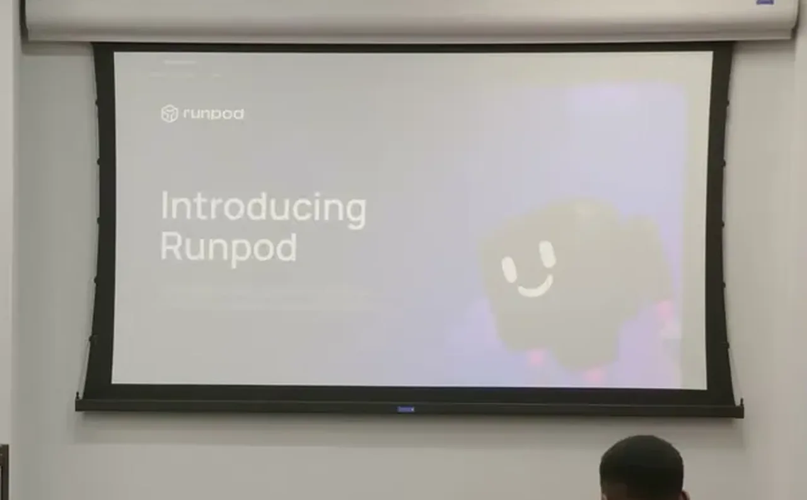
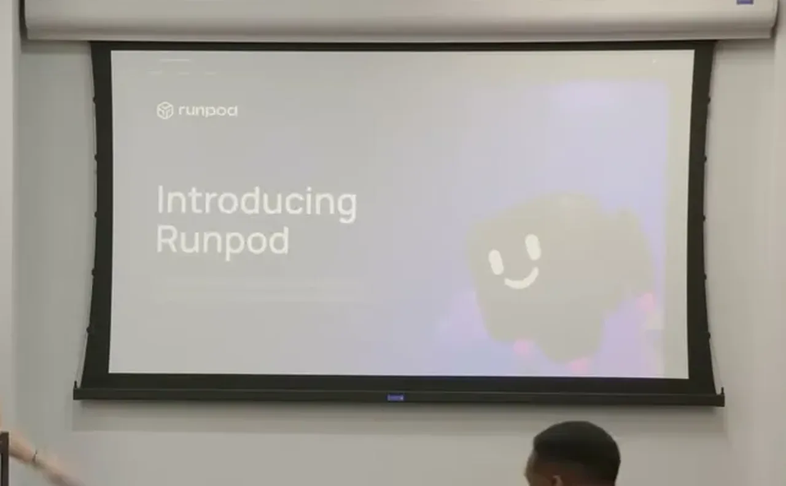
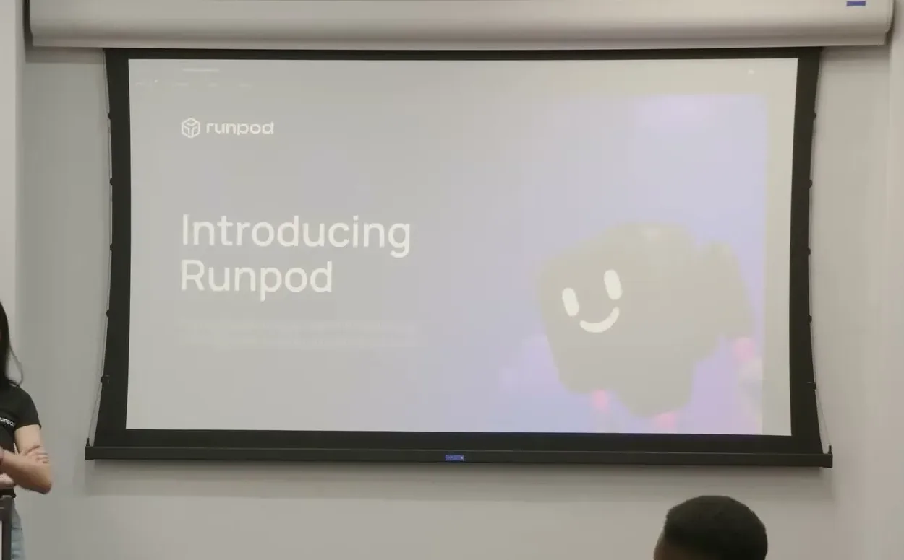
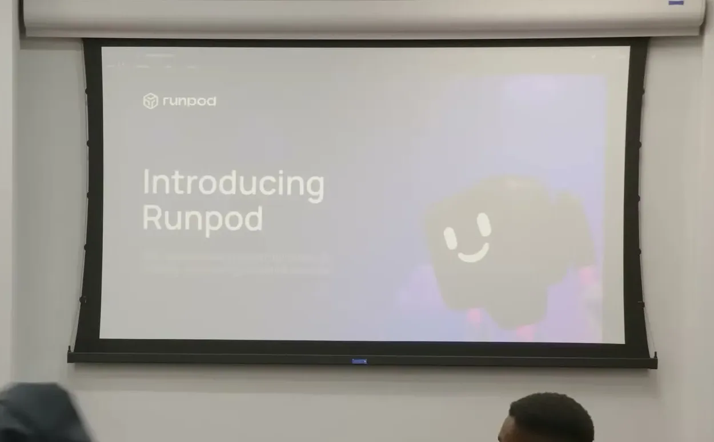
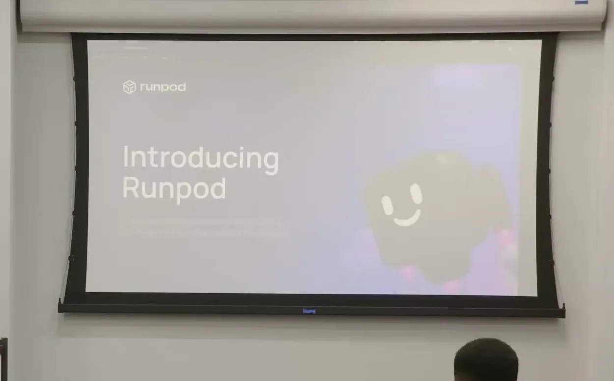
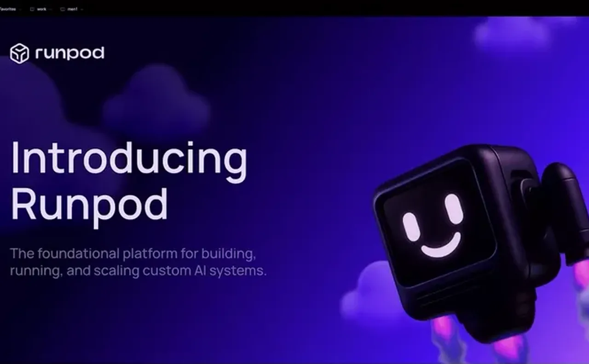
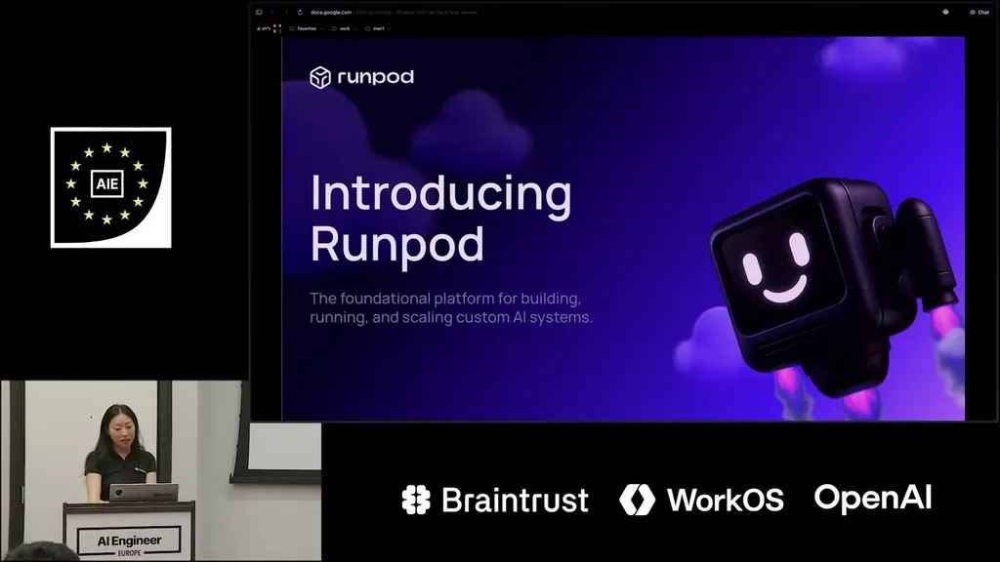
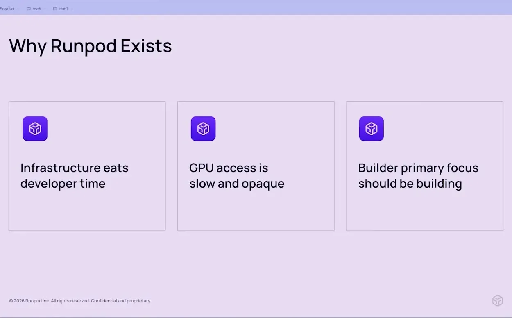
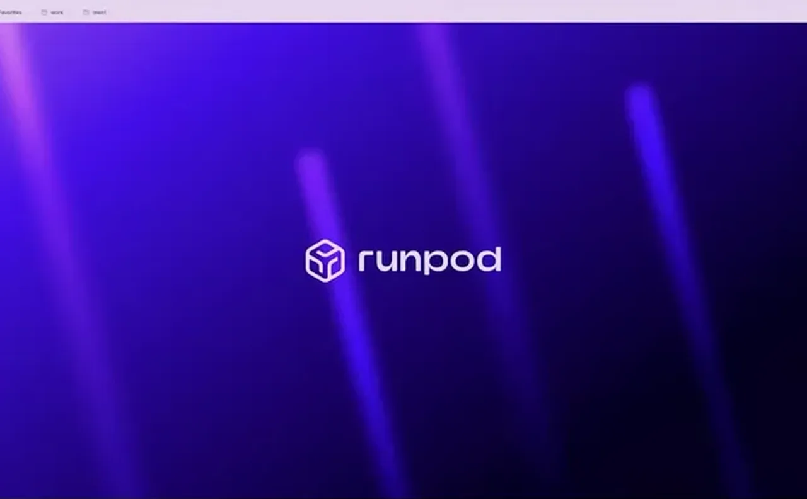
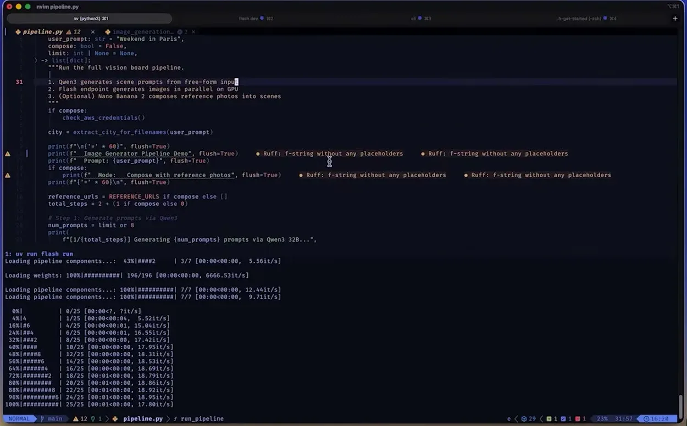
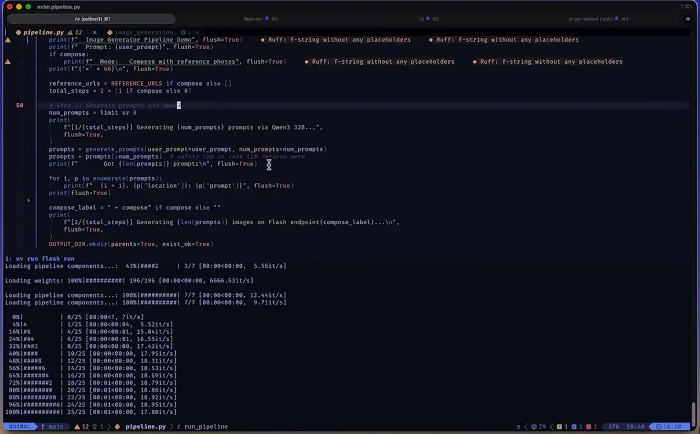
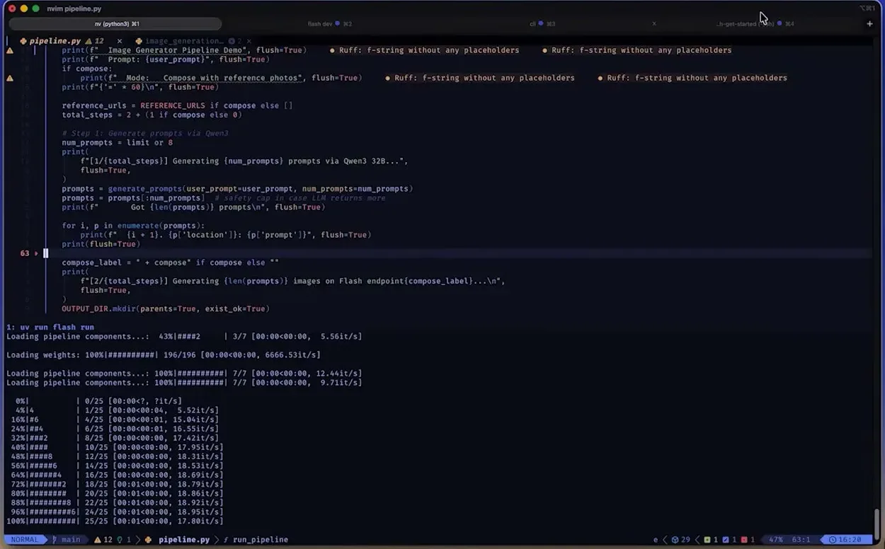
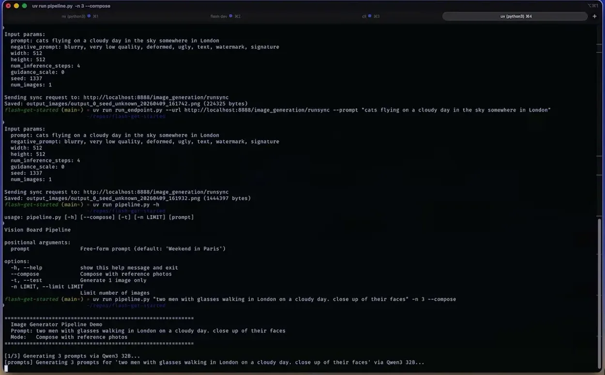
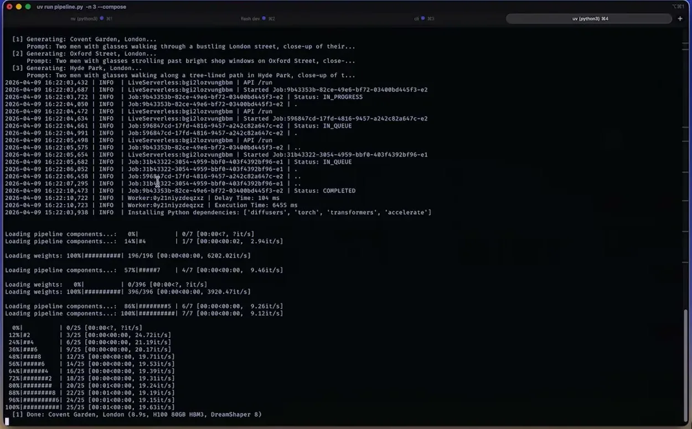
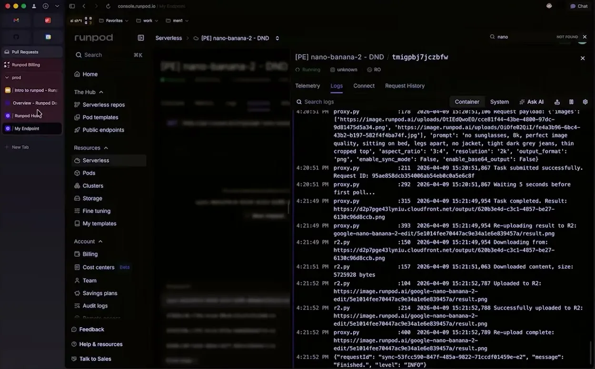
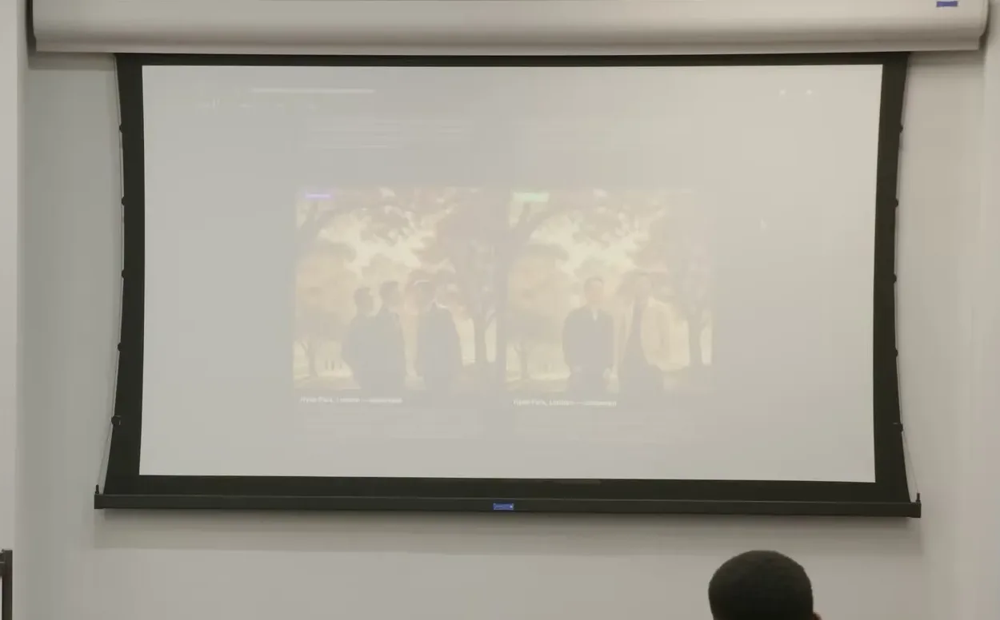
| Stance | Claim | t |
|---|---|---|
| asserts | RunPod started in 2022 out of a failed crypto-mining venture that left the founders with spare GPUs. | 02:04 |
| asserts | RunPod recently reached $120 million in annual recurring revenue. | 03:06 |
| asserts | Flash aims to remove the build/push/pull iteration cycle by deploying a function to a GPU directly from the local dev environment. | 06:13 |
| asserts | In the live demo, the displayed price for an H100 was 0.00116 cents per second of active runtime. | 17:26 |
| recommends | RunPod recommends starting with pods or a low worker count while experimenting, reserving serverless for larger distributed workloads. | 17:57 |
| asserts | Flash hot-reloads on file changes so edited code is repackaged and pushed to the cloud automatically for fast iteration. | 07:16 |
| asserts | The Flash endpoint decorator lets developers specify a GPU family, citing Ada/A80 variants as different Nvidia H100 card variations. | 11:28 |
Machine-readable copy embedded in this page (script#ontology) and in the corpus ontology.